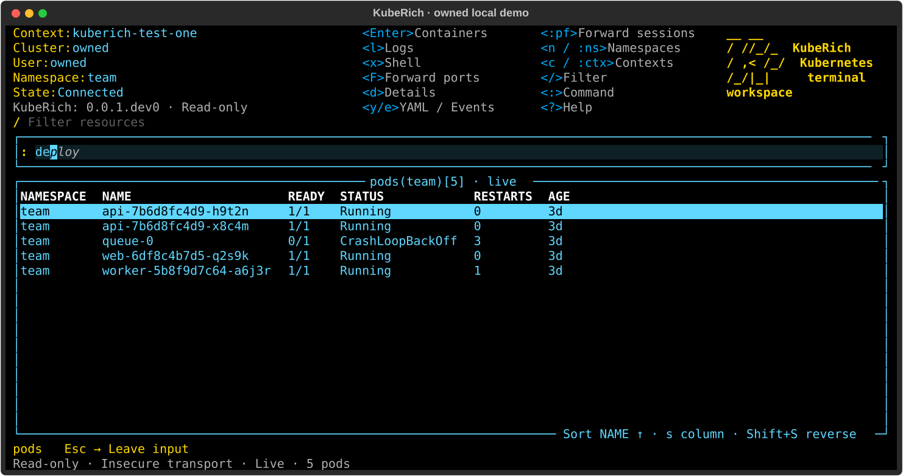
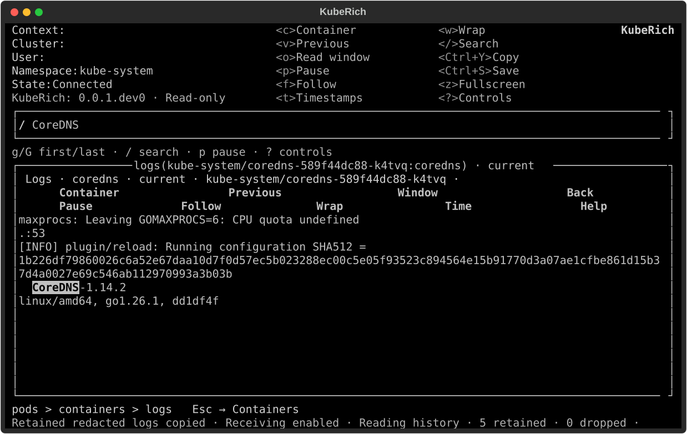

Find your bearings.
Contexts and namespaces are tables. Type a command, accept its inline suggestion, and keep moving.
:ctx:nsTab/DEVELOPMENT PREVIEW / $version
A Kubernetes workspace that lives in your terminal. Find a workload, follow its logs, open a container shell, and make a deliberate change.
Python + Textual. Your kubeconfig. Your terminal.

Contexts and namespaces are tables. Type a command, accept its inline suggestion, and keep moving.
:ctx:nsTab/Pod → containers → logs. Search a stream or open an embedded shell; return to the selection you left.
Review the captured target and effect before confirming. Read-only mode blocks writes and shells.
:scale:edit:writesStart with the tools that are implemented today. This is an evolving independent project; complete K9s parity is not claimed.
See the resource views
Pause the view without losing incoming history. Search retained lines, follow the latest output, and return to the same container.
Log viewer guideShells use kubectl exec inside Textual. While a shell is open, its keys go to the remote program; exit returns to containers.
04 / START SMALL
Install a trusted local wheel, choose an intended context, and start with reads. Linux checks are complete locally; macOS and public release qualification remain pending.
Not yet available: public downloads, generic CRD views, live usage metrics, deletion, file transfer, ephemeral debugging or user plugins.